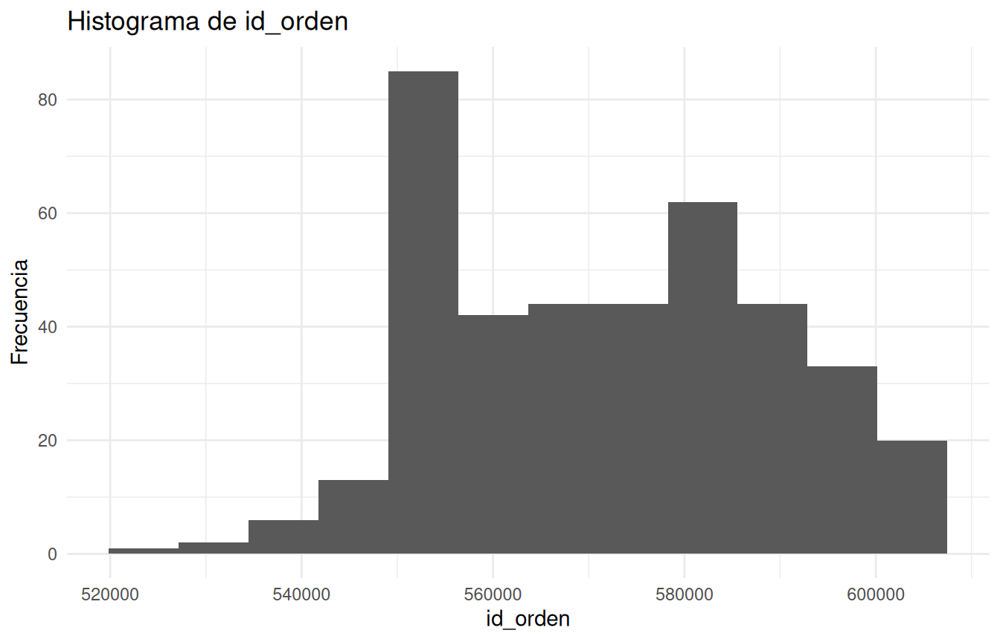
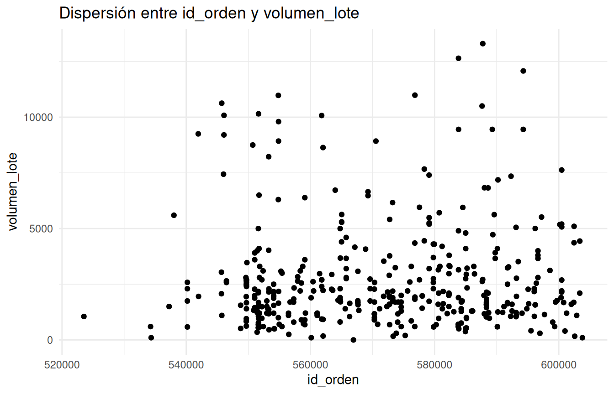

Capítulo 6 Análisis Exploratorio
El análisis exploratorio describe la distribución de las variables, identifica patrones y permite detectar valores atípicos o posibles inconsistencias.
6.1 Tabla descriptiva
## mpg cyl disp hp drat
## Min. :14.30 Min. :4.0 Min. :108.0 Min. : 62.0 Min. :2.760
## 1st Qu.:18.82 1st Qu.:4.5 1st Qu.:150.0 1st Qu.: 97.5 1st Qu.:3.165
## Median :21.00 Median :6.0 Median :163.8 Median :110.0 Median :3.770
## Mean :20.37 Mean :5.8 Mean :208.6 Mean :122.8 Mean :3.538
## 3rd Qu.:22.45 3rd Qu.:6.0 3rd Qu.:249.8 3rd Qu.:119.8 3rd Qu.:3.900
## Max. :24.40 Max. :8.0 Max. :360.0 Max. :245.0 Max. :3.920
## wt qsec vs am gear
## Min. :2.320 Min. :15.84 Min. :0.0 Min. :0.00 Min. :3.0
## 1st Qu.:2.944 1st Qu.:17.02 1st Qu.:0.0 1st Qu.:0.00 1st Qu.:3.0
## Median :3.203 Median :18.45 Median :1.0 Median :0.00 Median :4.0
## Mean :3.128 Mean :18.58 Mean :0.6 Mean :0.30 Mean :3.6
## 3rd Qu.:3.440 3rd Qu.:19.86 3rd Qu.:1.0 3rd Qu.:0.75 3rd Qu.:4.0
## Max. :3.570 Max. :22.90 Max. :1.0 Max. :1.00 Max. :4.0
## carb
## Min. :1.00
## 1st Qu.:1.25
## Median :2.00
## Mean :2.50
## 3rd Qu.:4.00
## Max. :4.006.2 Promedios por grupos
Si existe la variable cyl, se construye una tabla de medias por grupo.
if ("cyl" %in% names(datos) && "mpg" %in% names(datos)) {
tabla_mpg <- datos |>
dplyr::group_by(cyl) |>
dplyr::summarise(
n = dplyr::n(),
media_mpg = mean(mpg, na.rm = TRUE),
sd_mpg = sd(mpg, na.rm = TRUE)
)
knitr::kable(tabla_mpg, caption = "Resumen de mpg por número de cilindros.") |>
kableExtra::kable_styling(full_width = FALSE)
}| cyl | n | media_mpg | sd_mpg |
|---|---|---|---|
| 4 | 3 | 23.33333 | 0.9237604 |
| 6 | 5 | 20.14000 | 1.4240786 |
| 8 | 2 | 16.50000 | 3.1112698 |
6.3 Histograma
var_num <- names(datos)[sapply(datos, is.numeric)][1]
ggplot(datos, aes(x = .data[[var_num]])) +
geom_histogram(bins = 12) +
labs(
title = paste("Histograma de", var_num),
x = var_num,
y = "Frecuencia"
) +
theme_minimal()
Figure 6.1: Distribución de una variable numérica seleccionada.
6.4 Diagrama de dispersión
vars_num <- names(datos)[sapply(datos, is.numeric)]
if (length(vars_num) >= 2) {
ggplot(datos, aes(x = .data[[vars_num[1]]], y = .data[[vars_num[2]]])) +
geom_point() +
labs(
title = paste("Dispersión entre", vars_num[1], "y", vars_num[2]),
x = vars_num[1],
y = vars_num[2]
) +
theme_minimal()
}
Figure 6.2: Relación entre dos variables numéricas.